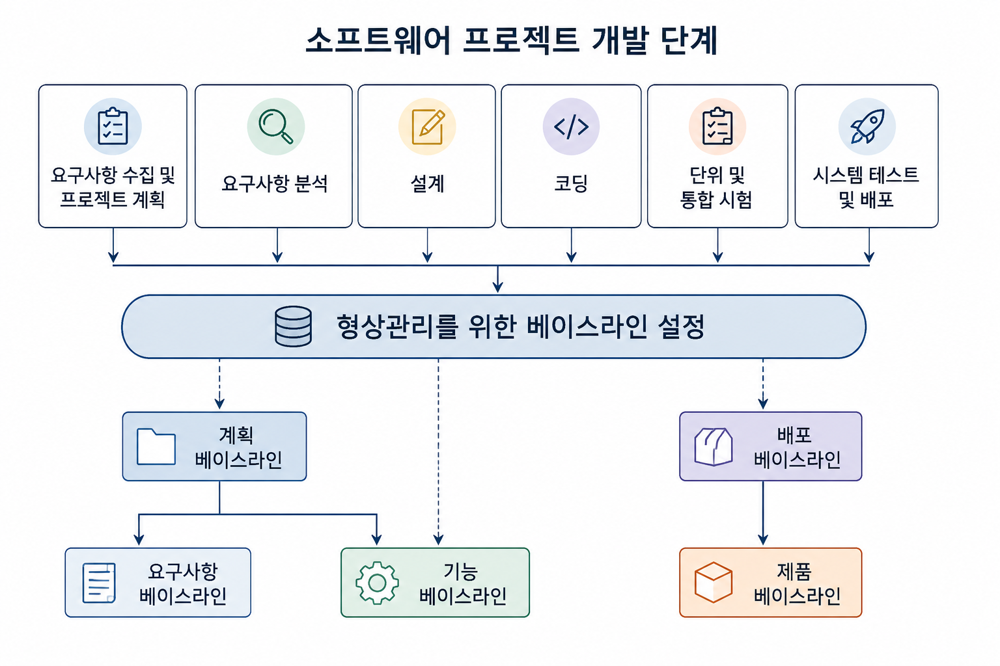
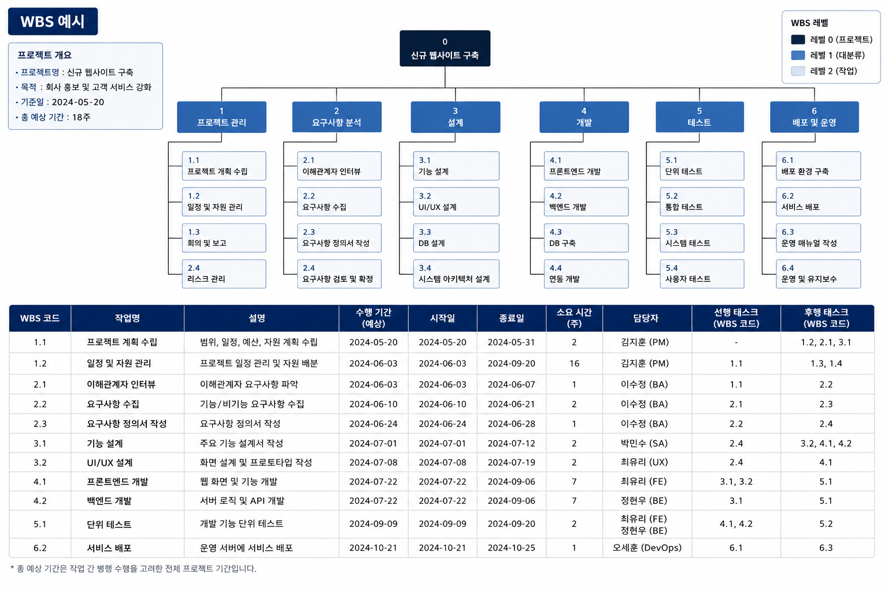
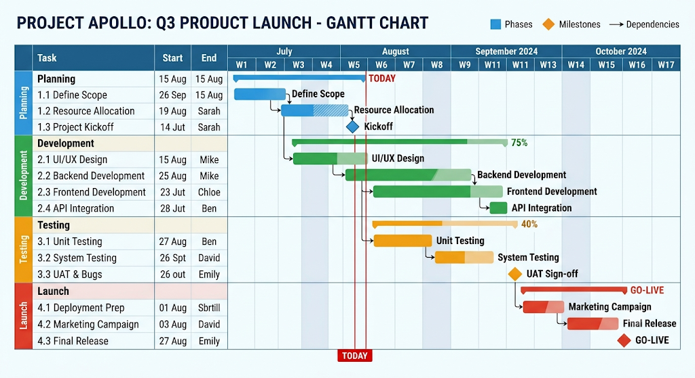
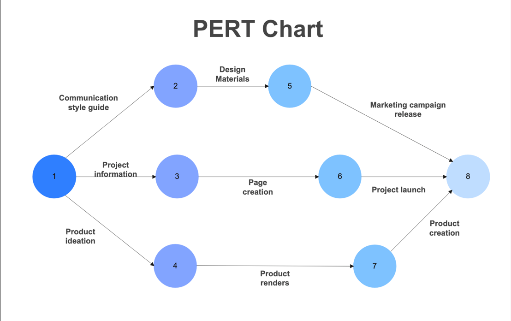
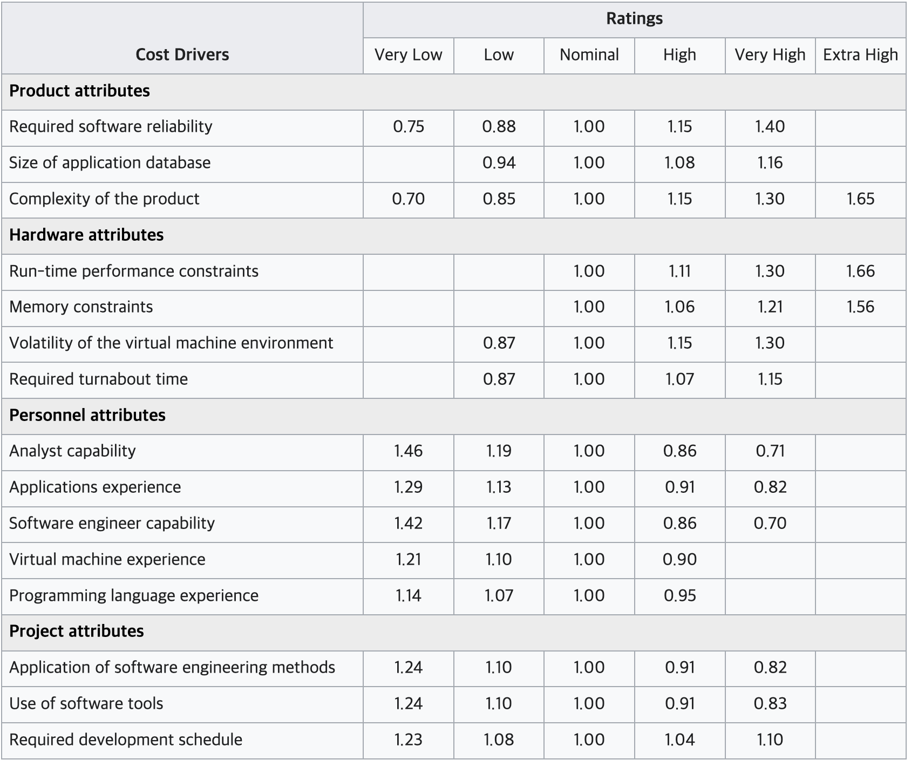

프로젝트 관리 기법¶
정확하게 비용을 산정하기는 불가능하지만, 예측된 값을 기반으로 프로젝트를 관리함
일정 관리 기법¶
어떤 프로세스 모델을 선정했는지, 어떤 베이스라인을 정의할지에 따라 정해짐
베이스라인 관리¶
| 베이스라인 | 정의 시점 |
|---|---|
| 요구사항 베이스라인 | 요구사항을 수집하고 계획을 수립한 후 정의 |
| 기능 베이스라인 | 요구사항 분석 후 설정 |
| 제품 베이스라인 | 개발 완료 후 정의 |

WBS¶
프로젝트 전체 목표를 중간의 세부 목표들로 쪼개어 트리 형태로 나타낸 목록
프로젝트에서 수행해야 하는 모든 종류의 작업 식별이 목적
- 독립적으로 이루어질 수 있을 때까지 태스크를 분할
- 태스크 수행 시간, 선행·후행 태스크, 담당자 정보 포함
- 전체 소요 시간 파악 가능
- 문서화, 프로젝트 리뷰 같은 작업도 태스크로 식별해야 함

간트 차트¶
스케줄링, 예산 산정, 자원 계획 수립을 위한 일정 표현 기법
바 차트 형태로 소요 시간 표현

퍼트 차트¶
태스크 간 의존 관계를 표현하는 차트
- 원으로 태스크, 화살표로 의존성 표현
- 핵심 수행 경로인 임계 경로를 식별하고 관리 가능
- 태스크 수행 일수의 합이 가장 많은 경로가 임계 경로

비용 관리 기법¶
COCOMO / COCOMO Ⅱ¶
유사 소프트웨어를 비교 분석해 KDSI를 산출하고, 복잡도에 근거해 세 가지 모드 중 하나 선택
KDSI : 소스 코드를 1000줄 단위로 센 것, 코드가 만 줄이면 10 KDSI
| 개발 모드 | 성격 | 소요 인력 | 소요 일수(월) |
|---|---|---|---|
| Organic | 작고 단순 | PM = 2.4(KDSI)^1.05 | TDEV = 2.5(PMDEV)^0.38 |
| Semidetached | 중간 규모 | PM = 3.0(KDSI)^1.12 | TDEV = 2.5(PMDEV)^0.35 |
| Embedded | 크고 복잡, 엄격한 제약 | PM = 3.6(KDSI)^1.20 | TDEV = 2.5(PMDEV)^0.32 |
복잡한 모드일수록 같은 코드 양이어도 더 많은 노력이 필요
- PM : Person-Month, 한 사람이 한 달 일하는 양을 단위로 한 총 노력
- ex) PM=24면 한 사람이 24개월, 두 사람이 12개월
- PMDEV = PM × 노력 승수
- TDEV : 프로젝트 종료까지 소요되는 개월 수
노력 승수 표

15가지 인자 값을 선정하고 모두 곱하면 최종 노력 승수 값
COCOMO Ⅱ는 코드 라인 수만 이용하지 않고, 기능의 양과 복잡도를 기준으로 규모 산정
KDSI를 어떻게 예측하는가?
개발 전에는 코드 라인 수를 알 수 없으므로 추정이 필요유사 시스템 비교 : 과거 비슷한 프로젝트의 실제 코드 규모를 참고해 추정
전문가 판단 (Wide Band Delphi)¶
다수의 전문가가 모여 요구사항을 기준으로 크기 예상
- 전문가 그룹 선정, WBD 진행 방식 설명
- 전문가에게 필요한 정보 제공
- 의견을 정량화해 규모 산정
- 결과를 취합해 통합 버전 작성 후 피드백
- 의견 차이를 확인하고 재논의
파킨슨 법칙¶
어떤 방법으로 비용을 산정해도 조직의 인력에 개발 일정이 맞춰져 진행됨
인력을 외부에서 고용하거나 하청을 통해 개발하면 부적합
기능 점수 산정법¶
시스템이 제공하는 기능의 필요 정도와 복잡도를 기준으로 비용 산정
최근 표준 비용 산정 방법으로 활용
기능 점수 산정법이란 무엇인가?
사용자가 요구하는 소프트웨어의 기능 규모를 정량적으로 측정하는 국제 표준 방법기술이나 개발 환경에 종속되지 않고, 사용자 관점의 요구사항을 기반으로 일관된 규모를 산출하는 데 활용
위험 관리¶
프로젝트 기간에 발생할 수 있는 리스크를 예측하고, 예방·완화하기 위한 계획 수립
- ex) 소마 프로젝트 중 취업으로 팀원 이탈, 잦은 요구사항 변경
🔑 최종 정리¶
일정 관리는 베이스라인으로 기준점을 잡고, WBS로 작업을 잘게 쪼갠 뒤, 간트 차트로 일정을 그리고 퍼트 차트로 태스크 간 의존 관계와 임계 경로를 관리
비용 관리는 COCOMO는 KDSI라는 코드 규모를 입력으로 노력과 기간을 계산
위험 관리는 팀원 이탈이나 요구사항 변경 같은 리스크를 미리 예측해 대비